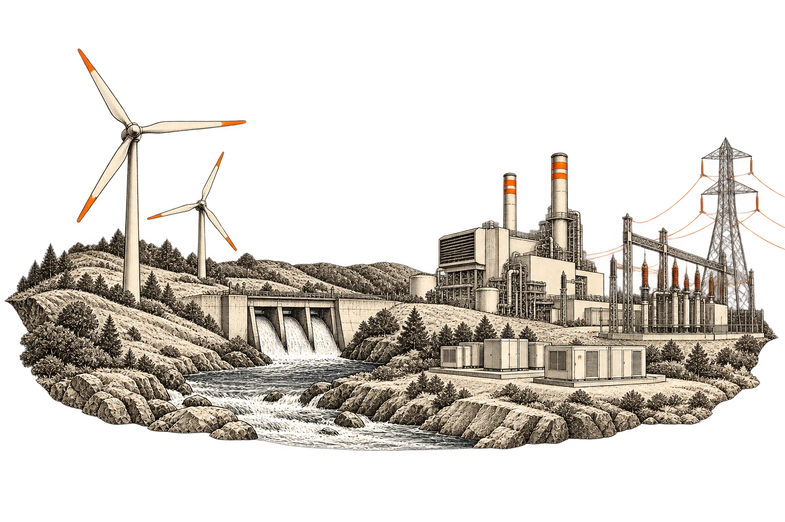
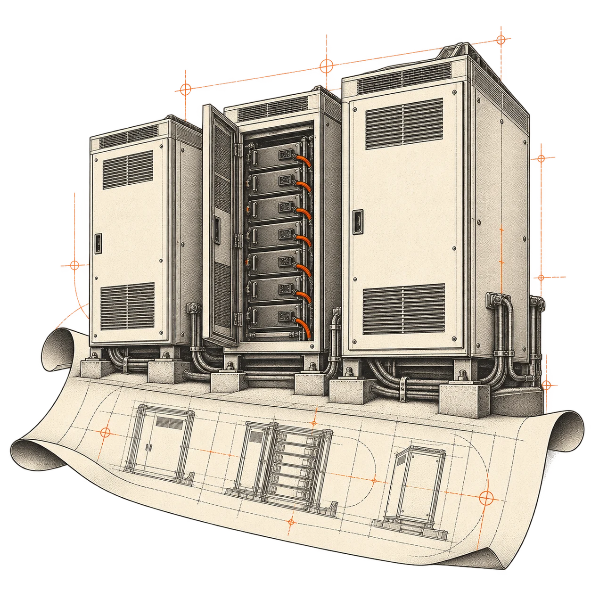

Investigate generation losses
Compare recorded output with the physics twin, investigate underperformance, and explore its estimated revenue impact.
Who it’s for
Independent power producers across generation technologies, and battery storage operators. Different assets, one need: recover more value from every site.

Independent power producers
Solar, wind, hydro, thermal, or a mixed portfolio. We start with your plant, its operating constraints, and the decisions your team needs to make.
Discuss your plantCompare recorded output with the physics twin, investigate underperformance, and explore its estimated revenue impact.
Test day-ahead and intraday forecasts against your baseline and market deadlines.
View the benchmarkHelp develop an engineer-reviewed workflow, ranked by potential recoverable value.
Our first working prototypes are a solar digital twin and forecasting harness. Models and integrations for other generation technologies are scoped with each engagement; maintenance workflows are in development.
Battery storage owners and operators
Bring generation forecasts, prices, and battery constraints into the same scheduling decision.
Battery scheduling is in development. We’re seeking operators to shape and validate it.
Discuss a battery pilot
Review MW/MWh ratings, state-of-charge history, power limits, and the existing energy management system.
Evaluate charging and discharging against market prices, generation forecasts, and operating limits.
Agree success measures and review recommendations with your operators before expanding a pilot.
Review the data. Quantify the opportunity.
Define a pilot with your operating team.